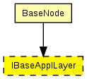
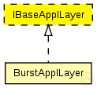

This documentation is released under the Creative Commons license
This documentation is released under the Creative Commons licenseInterface for application layer modules

The following diagram shows usage relationships between types. Unresolved types are missing from the diagram. Click here to see the full picture.
The following diagram shows inheritance relationships for this type. Unresolved types are missing from the diagram. Click here to see the full picture.
If a module type shows up more than once, that means it has been defined in more than one NED file.
| BaseNode (compound module) | (no description) |
| Name | Type | Default value | Description |
|---|---|---|---|
| debug | bool |
debug switch |
|
| headerLength | int |
length of the application message header (in bits) |
// Interface for application layer modules moduleinterface IBaseApplLayer { parameters: bool debug; // debug switch int headerLength @unit("bit"); // length of the application message header (in bits) gates: input lowerGateIn; // from network layer output lowerGateOut; // to network layer input lowerControlIn; // control from network layer output lowerControlOut; // control to network layer }
This documentation is released under the Creative Commons license